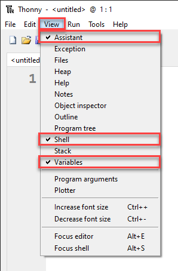
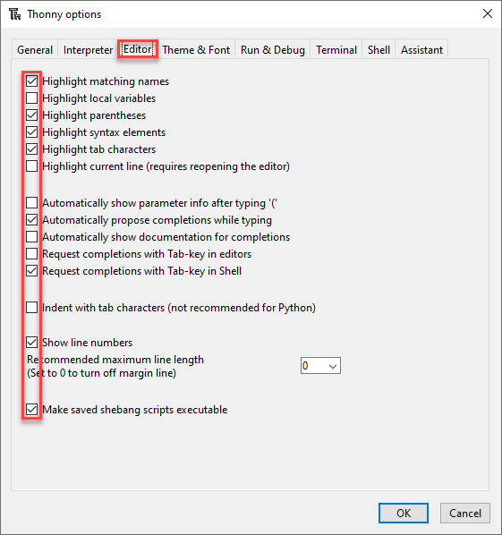
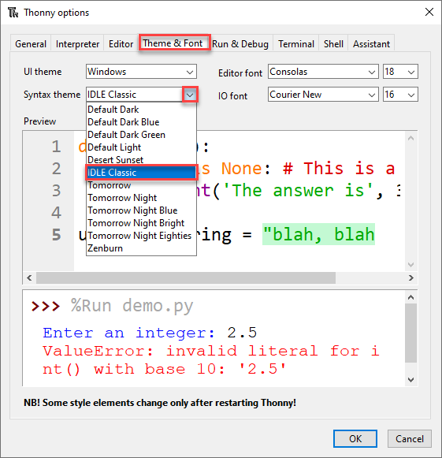

A Turtle Introduction to Python¶
Lesson 1
Topics¶
how to setup your programming environment
how to run your first program
how to use comments in Python
dealing with error messages
how to import modules
how to create a simple turtle program
Part 1¶
Thonny Introduction
What is Thonny¶
Thonny → the IDE (integrated development environment) we will use.
a Python IDE for beginners
packaged with Python → helps with setup
download it from thonny.org
Important distinction:
Python → the programming language we will use
Thonny → the program we use to write it
Similar to:
English → the language we use
Microsoft Word → the program we use to write it
Python programs consists of text files called scripts.
Any text editor can write Python.
IDEs offer extra features, for example
highlighting syntax
debugging help
Setting up Thonny¶
Need to turn on features, so our IDEs looks the same.
View menu → tick beside Assistant, Shell and Variable.

Tools → Options

Editor tab → check-boxes as below.

Theme and Font tab → Syntax theme → IDLE Classic

The User Interface¶

First Program¶
For our first program we are going to make a simple program called hello world. This is the traditional first program to write.
Type the following code into the Code panel:
# Our First Program
print("Hello World")
PRIMM¶
We will use the PRIMM process:
PRIMM stands for:
Predict
Run
Investigate
Modify
Make
PRIMM → reflects effective programming practices PRIMM → encourages curiosity in programming
Apply PRIMM process
Predict → what do you think will happen?
Run → click the Play button (or F5).
Hello World
Is this what you predicted?
Let’s investigate what happened.
Investigate¶
Looking at code
only
Hello Worldappears in the terminalcompletely misses
# Our First Program.#character → the line is a comment
Computers ignore comments Good way to add notes to code.
Line 3 → print is purple
Syntax highlighting
Purple → a Python keyword
Removing the
nso the line →prit("Hello World")Notice
prnt→ no longer purplePredict what will happen and then Run the code
Error message in your Shell:
Traceback (most recent call last):
File "<string>", line 3, in <module>
NameError: name 'prnt' is not defined
Line 1:Traceback (most recent call last):→ “this is where I got up to”Line 2:File "<string>", line 3, in <module>→ file and the line of errorLine 3:NameError: name 'prnt' is not defined→ type of error.NameError→ found a word that it doesn’t understand.Word it doesn’t understand →
prnt.
Fix up line 3 → print("Hello World")
Notice that
print→ purple.
Continue investigation:
Remove the two
"line 3→print(Hello World)
Predict what will happen and then Run the code
Shell contains a different error:
Traceback (most recent call last):
File "<string>", line 3
print(Hello World)
^^^^^^^^^^^
SyntaxError: invalid syntax. Perhaps you forgot a comma?
Line 3→ specific line with the errorprint(Hello World)Line 4→^point to error locationLine 5→SyntaxError: invalid syntax. Perhaps you forgot a comma?:error is a
SyntaxError: invalid syntax.→ code does not follow the rulessuggestion →
Perhaps you forgot a comma?(wrong in this case)
Change line 3 → print("Hello World")
"Hello World"turns greenSyntax highlighting →
Hello Worldis a stringstrings are a whole bunch of characters
Continue Investigation:
line 3→ remove(and)charactersreads →
print Hello WorldPredict what will happen and then Run the code
Error in Shell:
Traceback (most recent call last):
File "<string>", line 3
print "Hello World"
^^^^^^^^^^^^^^^^^^^
SyntaxError: Missing parentheses in call to 'print'. Did you mean print(...)?
different
SyntaxError→Missing parentheses in call to 'print'.parentheses → curved brackets
this time hint is correct
Did you mean print(...)?
Continue Investigation:
replace the opening parenthesis
(line 3→print("Hello World".
Predict what will happen and then Run the code
Error in Shell:
Traceback (most recent call last):
File "<string>", line 3
print ("Hello World"
^
SyntaxError: '(' was never closed
error message → failed to close parenthesis.
every opening parenthesis
(needs matching closing parenthesis).
Look at code in Thonny
grey highlight from the
(onwardssyntax highlighting → an opening parenthesis was not closed
Fix line 3 → print("Hello World").
Investigation concluded.
Error messages:
don’t be discouraged
the most experienced programmers get error messages
Error messages are your friend, they help you to work out what went wrong
Modify¶
Time to modify the code.
Making the code print different things to the Shell.
Part 2:¶
Introducing turtle
First turtle program¶
Click the New icon
Type the below into the new file
Save it using the name
lesson_1_pt_1.py.
# Our first turtle program
Python has limited set of commands (functions)
Access to extra commands (called modules)
Turtle is one of those modules
to access other modules → use the
importcommand.
# Our first turtle program
import turtle
Create a turtle¶
Turtle → little arrow that you can program
Before programming need to make one
# Our first turtle program
import turtle
my_ttl = turtle.Turtle()
my_ttl = turtle.Turtle()
turtle.Turtle()tells Python:from the turtle module you imported (
turtle)use the command
Turtle()to create a turtle.
my_ttl =names your created turtlemy_ttl.
Name turtle anything
can only be a one word name
replace
my_ttlwith your name
Make your turtle move¶
# Our first turtle program
import turtle
my_ttl = turtle.Turtle()
my_ttl.forward(100)
Predict and run the program
PRIMM
Prediction
probably predicted movement to the right
did you predict the line?
Investigate → changing things and see what happens.
Modify → make lines of different length
Changing the turtle environment¶
Change the Turtle environment → consistent between all our computers.
make the Turtle window the same size
# Our first turtle program
import turtle
window = turtle.Screen()
window.setup(500, 500)
my_ttl = turtle.Turtle()
my_ttl.forward(100)
The window is called a Screen
window = turtle.Screen()
turtle.Screen()→ useScreen()from turtle module (turtle.) to create windowwindow =give created window the namewindow
window.setup(500,500)
set the size of
window500 pixels wide
500 pixels high
What are pixels?¶
Screen → thousands of little dots → pixels.
Screen measurement of 1920 x 1080 → 1,920 pixels wide and 1,080 pixels high.
Pixels → our measurement of movement on the screen
forward(100)→ move forward100pixels.
Small aesthetic change
# Our first turtle program
import turtle
window = turtle.Screen()
window.setup(500, 500)
my_ttl = turtle.Turtle()
my_ttl.shape("turtle")
my_ttl.forward(100)
Predict and run the program
Change direction¶
Lets do more drawing
# Our first turtle program
import turtle
window = turtle.Screen()
window.setup(500, 500)
my_ttl = turtle.Turtle()
my_ttl.shape("turtle")
my_ttl.forward(100)
my_ttl.left(90)
my_ttl.forward(100)
PRIMM
Predict: What do you think will happen?
be specific
draw it on paper
Run:
did it follow your prediction?
did it look the same as your drawing?
Investigate:
try changing the values within the brackets
Exercises¶
Exercises are the make component of the PRIMM model
Complete exercises 1 - 3